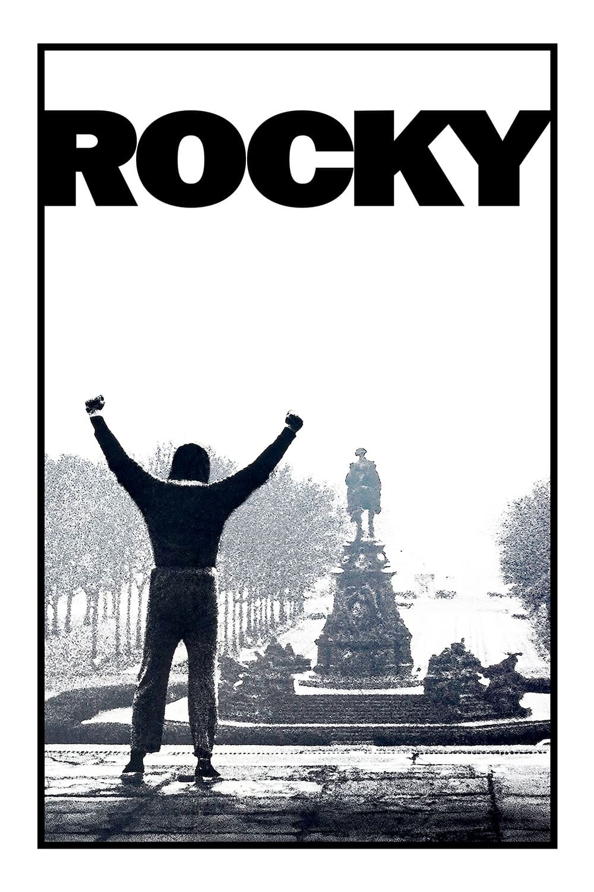

Peliculas
Lista de peliulas disponibles
El padrino
Protagonizada por Marlon Brando y Al Pacino como los líderes de una poderosa familia criminal ficticia de Nueva York, la historia,
ambientada desde 1945 a 1955, cuenta las crónicas de la familia Corleone liderada por Vito Corleone (Brando), enfocándose en el personaje
de Michael Corleone (Pacino), y su transformación de un reacio joven ajeno a los asuntos familiares a un implacable jefe de la mafia ítalo-estadounidense.
Tiempos Modernos
Escrito y dirigido por Charles Chaplin, que fue también el actor principal.
Esta película es un reflejo de las condiciones desesperadas de las cuales era víctima un empleado de la clase obrera en la época de la Gran depresión,
en la visión dada por la película, por la eficiencia de la industrialización y la producción en cadena.
Pulp Fiction

Dirigida por Quentin Tarantino. la película entrelaza varias historias cuyos protagonistas son miembros del crimen organizado de Los Ángeles.
Los diálogos estilizados, la mezcla de humor y violencia y su tono irónico distinguen a la película.
Su nombre deriva de las revistas de literatura pulp y las novelas gráficas hard boiled, muy populares a mediados del siglo XX, conocidas por su violencia gráfica y su prosa dura.
Rocky

La historia narra la búsqueda del sueño americano por parte de Rocky Balboa, un italoestadounidense de clase baja que se dedica a cobrar los créditos de un prestamista de
Filadelfia. Aunque tiene talento para el boxeo, le falta motivación, pero la encuentra ante la oportunidad única de combatir por el título de los pesos pesados y por el
amor de una mujer
Duro de matar
Die Hard sigue al oficial fuera de servicio del Departamento de Policía de Nueva York John McClane mientras se enfrenta a un grupo de criminales altamente
organizados liderados por Hans Gruber , que realizan un atraco en un rascacielos de Los Ángeles bajo el pretexto de un ataque terrorista utilizando a rehenes
El regreso de los muertos vivientes

Cuenta la historia de cómo el dueño de un almacén, acompañado por sus dos empleados, un amigo de la funeraria y un grupo de punks adolescentes,
lidian con la liberación accidental de una horda de zombis imposibles de matar y hambrientos de cerebroen un desprevenido. pueblo